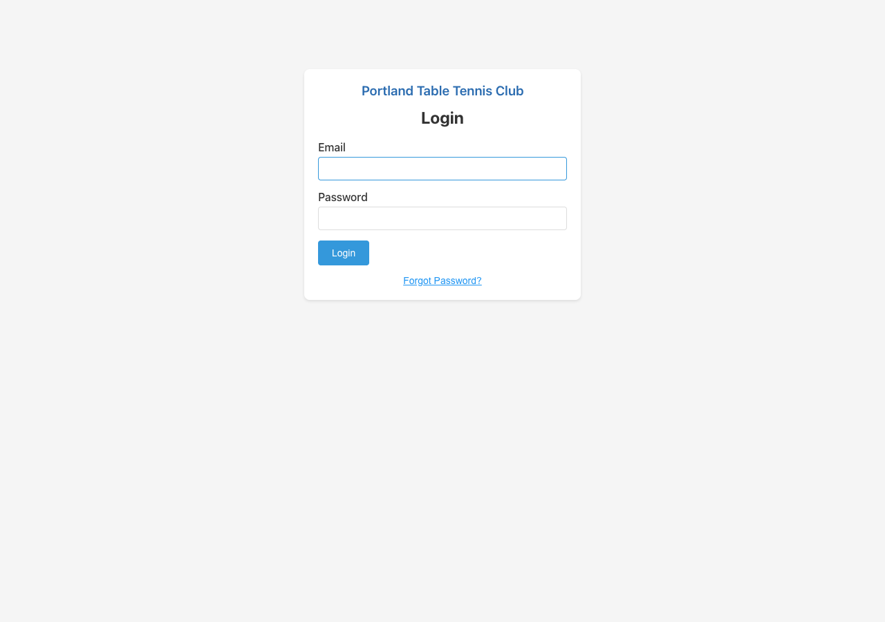
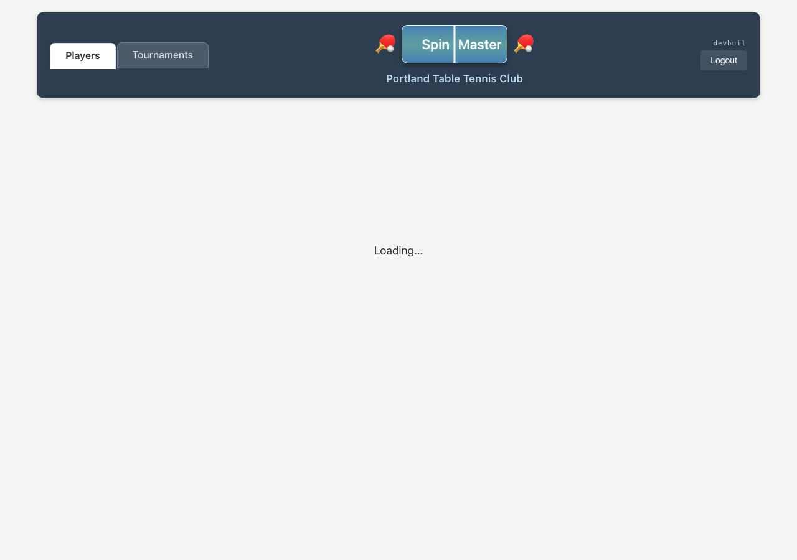
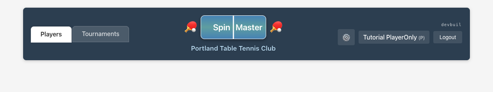
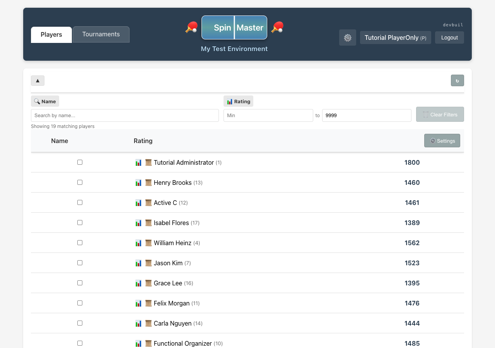

1. Sign in
After sign-in you see Players, Tournaments, Statistics, and History in the header (no admin-only system gear).

2. Players list and toolbar
Player accounts do not see + Player or + Tournament. You always have + Match and Stats for personal and analytical workflows.


3. Record a casual match
Choose + Match, pick an active opponent (you cannot remove yourself from the pairing), then complete the opponent-password step before scores when the flow requires it.

4. Statistics — individual and group rating views
What Statistics shows
The Statistics tab loads rating history over time for the players you pass in from the Players page: a multi-line chart plus per-player detail tables (dates, ratings, events).
Individual (one player, fast path)
- On Players, use the per-row chart control (Show statistics for a player) for any member.
- The app navigates to Statistics with that single player pre-selected; the chart and tables load immediately.
Group (compare several players)
- Click the toolbar button Stats to enter statistics selection mode.
- Select two or more active players from the table (checkbox column). Use Shift+click between two rows to add a contiguous range, the same pattern as other bulk-selection flows on the table.
- Click View Statistics. You land on Statistics with every selected
memberIdpassed in state. - On the Statistics page, use the Selected Players chips to show or hide each curve on the chart (checkbox on each chip). Shift+click between two chips toggles an entire range of players for the chart legend.
If no players were selected, Statistics explains that you need to pick players on the Players tab first.
5. History — rating log vs head-to-head matches
Open the History workflow from Players
- Use the row action Game history for the player against selected group (history/globe style control). The table switches to history-selection mode with a sticky header row for your focal player.
- Click another row’s opponent checkbox to add or remove opponents. Shift+click extends selection across a range of visible rows. Select All chooses every visible player except the focal player as opponents; Deselect All clears opponents.
- Click View History:
- With one or more opponents selected — History shows match history for the focal player against that opponent set (grouped summaries and match list with scores and rating-after where available).
- With no opponents (use Deselect All) — History shows the focal player’s full rating history timeline (same family of data as Statistics, presented as a chronological rating log on the History page).
- Cancel leaves selection mode without navigating.
Opening History from the header alone, without going through Players first, shows a short message until a player is supplied via the flow above.